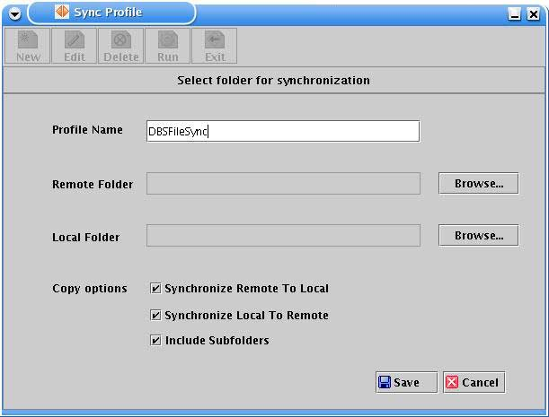
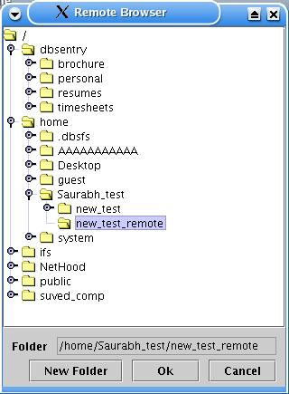

What is profile?
Before starting actual synchronization user needs to create a profile with a name assigned to it where he could store the details of synchronization such as remote folder and local folder to be synchronized, and copy options during synchronization.
How to create a profile?
To create a new profile for synchronizationClick on the 'New' icon [ ], at 'Sync Profile' window. Profile creation page appears with default settings as shown], at 'Sync Profile' window. Profile creation page appears with default settings as shown below.

Enter a name with which you want to create a Profile
Enter the path of remote folder to be synchronized or browse it using 'Browse' button.

Navigate to the folder you want to synchronize or create a new one using 'New Folder' button.
Click 'Ok' to select a folder path or 'Cancel' to exit.
Similarly select a local folder to be synchronized with remote folder.